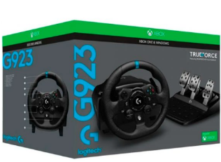

Logitech G923
Precio: $1.739.000
Plataforma: Compatible con Xbox y PC
Descripción del Logitech G923
El Logitech G923 es un volante de carreras diseñado para ofrecer una experiencia de simulación de conducción realista. Con la tecnología TrueForce, este volante cuenta con retroalimentación de fuerza avanzada para un control preciso y natural. Compatible con Xbox y PC, el G923 ofrece una sensación de conducción auténtica con una construcción robusta y una respuesta en tiempo real. Ideal para los entusiastas de las carreras y los simuladores, este volante lleva tu experiencia de juego a otro nivel.
Características:
- Tecnología TrueForce para una retroalimentación de fuerza avanzada.
- Fuerza de retroalimentación precisa y realista con motores duales.
- Volante de 900 grados de giro para mayor control.
- Pedales ajustables para mayor comodidad.
- Diseño premium y construcción robusta para máxima durabilidad.
- Compatibilidad con Xbox y PC.
Imágenes del Logitech G923


Especificaciones del Logitech G923
- Conexión: por cable
- Giro: 900 grados
- Compatibilidad: Xbox One, Xbox Series X|S y PC
- Retroalimentación: TrueForce (con motor dual)
- Pedales: Ajustables (acelerador, freno y embrague)
- Dimensiones: 29.4 x 27.4 x 30.9 cm